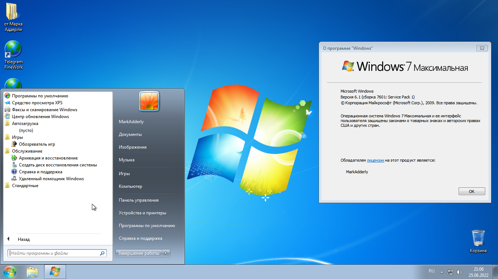
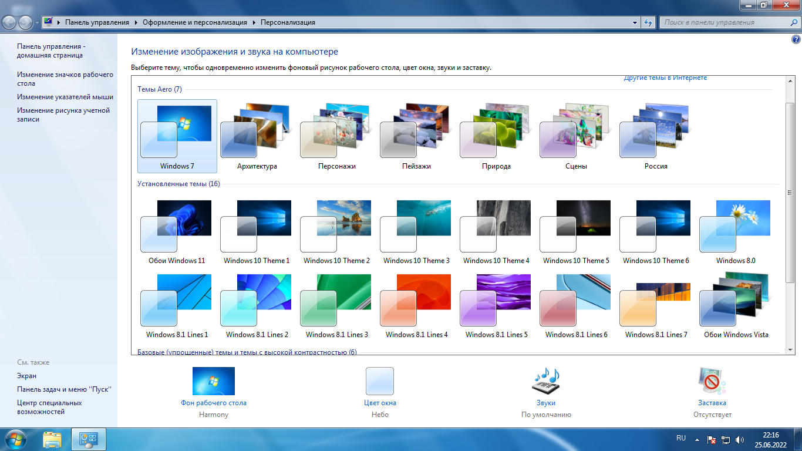
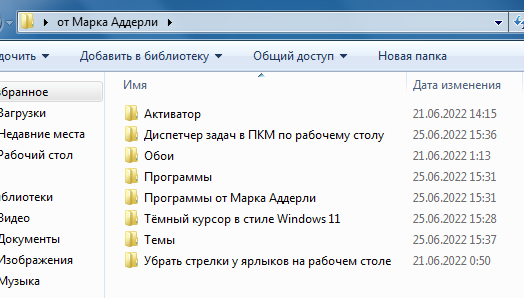
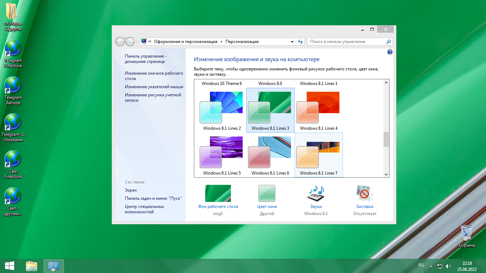
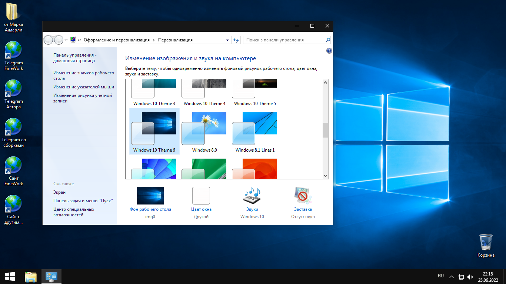

Сборки Windows 7
Windows 7 V3 by Adderly (25.06.2022)





Обновления на 2011 год. (Service Pack 1)
Добавлен активатор.
Добавлена папка "от Марка Аддерли" в которой находятся инсталяторы самых нужных и авторских программ
Интегрированы Framework 4.8, 4.7.2, 3.5
Интегрированы Microsoft Visual Studio Redistributable 2005, 2008, 2010, 2012, 2013, 2015 - 2022, x86 и x64
Добавлены темы Windows 8.1, и 10 (по желанию можно удалить)
Добавлены темы с обоями Windows Vista, 11
Отключены игры
Отключён Internet Explorer
Отключены компоненты для работы с мультимедиа "Media Center, Media Player"
Отключены компоненты планшетного пк
Отключены гаджеты
(по желанию можно вернуть)
Добавлен диспетчер задач в ПКМ по рабочему столу
Так же добавлена папка "Темы" в которой можно все более подробно настроить, и сделать Windows 7 похожей на 8 или 10
Образ весит 4.33 GB, после установки Windows занимает 12.4 GB.
Образ основан на официальном MSDN Windows 7.
Windows 7 V3.1 by Adderly (27.07.2022)

Обновления на 2011 год. (Service Pack 1)
Добавлен активатор.
Добавлена папка "от Марка Аддерли" в которой находятся инсталяторы самых нужных и авторских программ
Интегрированы Framework 4.8
Интегрированы Microsoft Visual Studio Redistributable 2005, 2008, 2010, 2012, 2013, 2015 - 2022, x86 и x64
Добавлены темы с обоями Windows Vista, 11, 8.0
Отключены игры
Отключён Internet Explorer
Отключены компоненты для работы с мультимедиа "Media Center, Media Player"
Отключены компоненты планшетного пк
Отключены гаджеты
(по желанию можно вернуть)
Добавлен диспетчер задач в ПКМ по рабочему столу
Образ весит 4.33 GB (столько же сколько и 3.0), после установки Windows занимает 14.5 GB.
Образ основан на официальном MSDN Windows 7.
Немного изменено содержимое папок "Браузеры, плееры, и архиваторы"
В отличии от 3.0, нет никаких тем.
Смотрите так же:
Сборки Windows 8.1 Сборки Windows 8.0 Сборки Windows 10